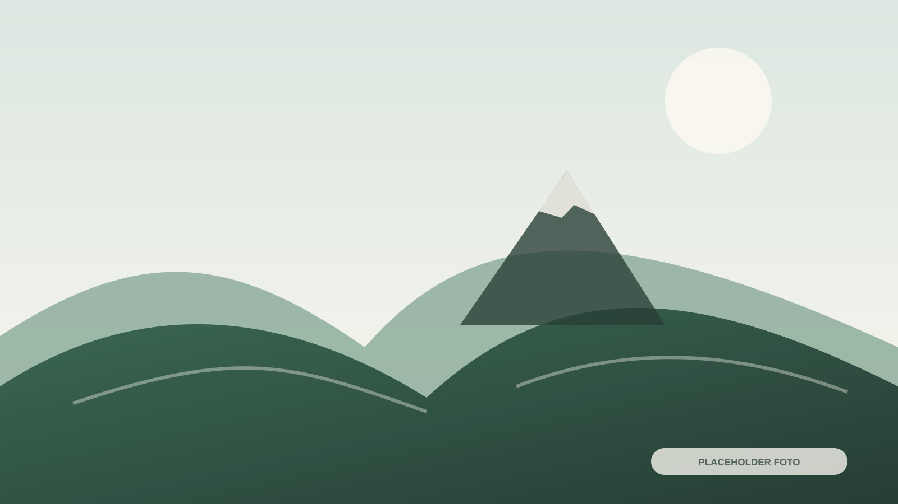

Dari Wonosobo
Rute dari pusat Wonosobo menuju Desa Patakbanteng.

Peta, rute, estimasi perjalanan, kondisi akses, kendaraan yang disarankan, titik transit, dan etika berkunjung.
Peta final akan memuat lokasi desa, Basecamp Patakbanteng, Rumah Bibit, dan fasilitas penting.
Isi tautan maps pada assets/js/config.js atau ganti blok ini dengan kode embed resmi.
Detail jarak, durasi, moda, dan titik transit belum tersedia dalam brief.
Rute dari pusat Wonosobo menuju Desa Patakbanteng.
Rute menggunakan transportasi umum atau kendaraan lanjutan.
Rute dari kawasan Dieng menuju Patakbanteng.
Arah, kondisi jalan, parkir, dan kendaraan yang disarankan.
Pilihan angkutan, titik turun, dan layanan lokal.
Kota atau titik kedatangan terdekat dapat ditambahkan.
| Rute | Jarak | Durasi | Kondisi Jalan | Saran Kendaraan |
|---|---|---|---|---|
| Wonosobo – Patakbanteng | BELUM DIISI | BELUM DIISI | BELUM DIISI | BELUM DIISI |
| Terminal Mendolo – Patakbanteng | BELUM DIISI | BELUM DIISI | BELUM DIISI | BELUM DIISI |
| Dieng – Patakbanteng | BELUM DIISI | BELUM DIISI | BELUM DIISI | BELUM DIISI |
Kondisi jalan dan waktu tempuh dapat berubah. Konfirmasi kepada pengelola atau penyedia transportasi lokal.
Menghormati adat, kegiatan warga, dan ketenangan area permukiman.
Tidak merusak tanaman dan menjaga kebersihan kawasan.
Gunakan fasilitas secara bertanggung jawab dan patuhi petunjuk pengelola.
Periksa peta, titik keberangkatan, estimasi perjalanan, dan kondisi akses.